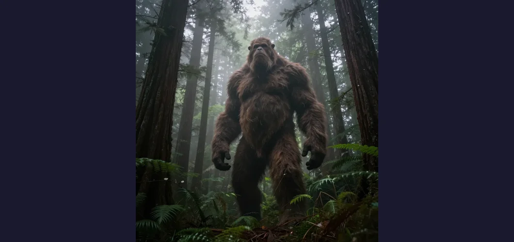

Bigfoot: The Elusive Creature That Keeps Eyewitnesses Coming Forward

Bigfoot — the most famous and most debated cryptid on Earth, reportedly seen by thousands across North America
Two riders at Bluff Creek
On October 20, 1967, two men rode their horses through the woods near Bluff Creek, California. Their names were Roger Patterson and Robert “Bob” Gimlin. Beside the creek, they saw something large and hairy crouching on the bank. Patterson jumped from his horse and grabbed his movie camera.
He had rented a Cine-Kodak K-100 16mm camera. He filmed the creature as it stood up and walked away across a bar of sand. It looked back over its right shoulder for a moment. Then it walked into the trees.
What was it? Some people say Bigfoot. Others say a person in a suit. More than fifty years later, people still argue. To understand why, we must first learn what people say Bigfoot is.
The giant of the misty forest
Picture the old forests of the Pacific Northwest. Douglas firs and western red cedars grow very tall. The valleys are misty and the slopes are steep. In some places, sunlight hardly reaches the ground.
For hundreds of years, perhaps thousands, people have reported meeting a huge, hairy creature there. It walks upright on two legs like a human. Dark hair covers it, like an ape. Witnesses say it stands between six and nine feet tall. Some footprints are said to be up to 24 inches (60 centimeters) long. People also say it screams in the night.
Reports come from almost every state of the United States and most of Canada. A group called the Bigfoot Field Researchers Organization, or BFRO, keeps a list of sightings. It counts thousands.
Bigfoot is also called Sasquatch. It is a cryptid, which is an animal that people report but science has not proved. And the stories are much older than the name.
Stories older than the name
Indigenous peoples across North America have told of large, hairy beings for centuries. Indigenous peoples are the first peoples of the land. Their stories began long before Europeans arrived. The beings are usually large, shy, and walk on two legs.
The word “Sasquatch” was first written down in the 1920s by a Canadian writer named J. W. Burns. It is thought to come from “sásq’ets,” a word in the Halkomelem language. The Sts’ailes (Chehalis) people of British Columbia use it. For them, Sasquatch is not a myth. It is a real, spiritual being and a guardian of the forest. People should respect it and stay away from it.
One of the best-known early stories from settlers came from 1924, near Mount St. Helens in Washington. A group of miners said they met large, hairy “ape-men” in a rough canyon. They said the creatures threw rocks at their cabin. The place is now called Ape Canyon.
Forest Service rangers looked into the story and found nothing. They thought the miners may have thrown the stones themselves. Still, the tale lived on. And thirty-four years later, a new set of clues appeared in the mud.
Big footprints, big news
In 1958, Jerry Crew drove a bulldozer for a logging company near Bluff Creek. Near his work site, he found a line of enormous footprints in the mud. They were 16 inches (40 centimeters) long.
Crew made plaster casts of the prints. A cast is a hard copy made by pouring plaster into a print. He took them to the Humboldt Times newspaper. A writer named Andrew Genzoli put the story on the front page on October 6, 1958. Many sources say he was the first to print the word “Bigfoot.” News services picked it up, and it spread across the country.
One of the owners of the logging company was Ray Wallace. In 2002, his family said that Ray had made the Bluff Creek footprints himself, with carved wooden feet. One researcher said that the wooden feet did not match the casts.
Doubters said this proved the whole story was a trick. Bigfoot researchers disagreed. They accepted that it hurt some of the footprint evidence. But they said it could not explain the thousands of other sightings, before and after 1958.
The film that will not go away
Let us go back to Patterson’s film. It is about 59.5 seconds long. It is shaky, but the shape is clear. Frame 352 shows the creature in the middle of a step, with its head turned toward the camera. It is one of the best-known Bigfoot pictures.
Patterson and Gimlin guessed that the creature was 6 to 7 feet (1.8-2.1 meters) tall. They said it was female. Patterson died of a cancer called Hodgkin’s lymphoma in 1972. He said until the end that the film was real. Gimlin said for many years that he saw a real creature.
Some people say that the walk and the muscles show a real living body. They say no costume of 1967 could do that. Others say it is simply a person in a suit. Many experts doubt the film. Nobody has proved it true.
So the film cannot settle the matter. What do trained scientists say?
Scientists look at the clues
Most scientists think that Bigfoot stories come from three things. People mistake other animals for it, people play tricks, and people pass on old stories. But a few trained researchers wanted to look closer.
Dr. Grover Krantz was a professor at Washington State University who studied the human body and its history. He spent decades looking at casts of footprints. Some people say the casts show dermal ridges, which are tiny lines on the skin of the foot, like fingerprints. Krantz thought that Bigfoot could be a living group of Gigantopithecus blacki. That was a giant ape that lived in Asia until about 300,000 years ago. Critics point out that no fossils of it have ever been found in North America.
Dr. Jeff Meldrum, a professor of anatomy at Idaho State University, examined hundreds of casts. Anatomy is the study of how a body is built. In 2006 he wrote the book Sasquatch: Legend Meets Science. Most scientists do not agree with him.
Jane Goodall, the most famous expert on apes in the world, said in a 2002 radio interview, “I’m sure that they exist.” Many scientists disagree with her, too.
The BFRO found one more clue in 2000, in a national forest in Washington State. It is called the Skookum Cast, a large print of a body in a patch of mud. Supporters say that it shows the hip, thigh, and forearm of a large ape. Others doubt this.
But the main things are missing. There is no proven DNA, no body, and no fossil. That is the proof that science demands.
Fakes and honest mistakes
An honest story must also face the tricks. In 2008, two men named Matt Whitton and Rick Dyer said that they had found a dead Bigfoot in northern Georgia. A Bigfoot group paid them money. When the “body” thawed, the hair was fake, the head was hollow, and the feet were rubber. The two men admitted it was a hoax.
In 2014, Dyer tried again. He said that he had shot a Bigfoot near San Antonio, Texas, in 2012. Later that year he admitted that his “body” was a costume. There was also the “Minnesota Iceman” of 1968, a frozen “body” shown around the United States. One scientist called it a rubber model.
Tricks hurt the search. But they do not explain everything, because new reports keep coming. Skeptics have another answer. A 2009 study found that Bigfoot reports match the places where black bears live. Many people may be seeing bears.
Still hiding, or never there
We have mapped parts of the ocean floor. We have photographed the surface of Mars. Yet we cannot say for sure whether a large ape lives in the forests of North America.
On one side, there are thousands of reports, hundreds of footprint casts, and one film. On the other side, there is no body, no fossil, and no proven DNA. For science, the likeliest answer is a mix of mistakes, tricks, and old stories. A small chance remains that something real is out there. The forests of the Pacific Northwest are huge, and large parts are unexplored.
Think again of Bluff Creek in 1967. A man with a camera, a bar of sand, and a figure that looked back once. Nobody has shown what it was.
One day, someone may produce a body. Or someone may show that Bigfoot is only a myth. Until then, the search goes on.
References & Further Reading
NBC Los Angeles: Bigfoot festival in Willow Creek — Willow Creek and its Bigfoot Daze festival
📚 Recommended Reading: Bigfoot Sasquatch Evidence by Loren Coleman (on Amazon) — As an Amazon Associate, we earn from qualifying purchases.
Editorial note: The footprints, the film, and the hoaxes are real events, but nobody has found a body, a bone, or proven DNA of a Bigfoot. Most scientists think the stories come from mistaken animals, tricks, and old tales, and people still argue about the 1967 film. See our Editorial Policy.